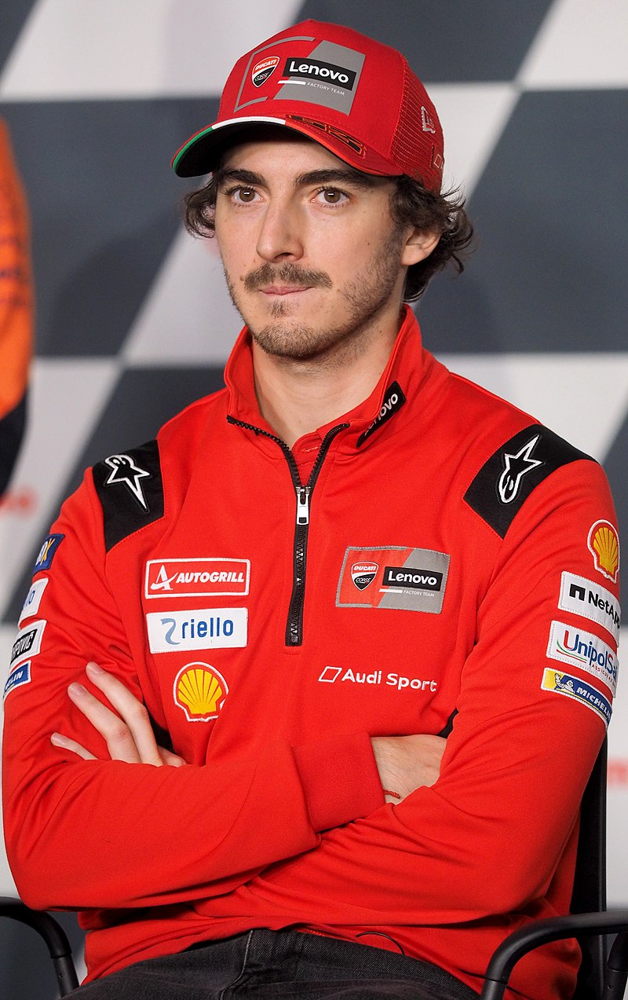

MOTOS UTILIZADAS NO MOTO GP (1000cc)
Ducati
Aprilia
Honda

MotoGP, ou Moto Grand Prix, é a principal categoria do Campeonato Mundial de Motovelocidade e um dos campeonatos mais antigos do mundo em esportes motorizados, com seu início em 1949. As corridas ocorrem simultaneamente às categorias Moto3, que desde 2012 substituiu a classe de 125cc, e Moto2, que assumiu a categoria de 250cc em 2010.
A categoria MotoGP foi estabelecida em 2002 para substituir a antiga classe de 500cc. Desde então, até a temporada de 2006, a cilindrada passou por diversas mudanças, sendo atualmente de 1000cc. Os direitos de transmissão do campeonato completo, que abrange MotoGP, Moto2 e Moto3, são atualmente detidos pelos grupos Fox Sports e ESPN, pertencentes à Disney.
No MotoGP, o grid de largada é organizado em três colunas, seguindo o padrão das principais categorias do automobilismo. As posições de partida são determinadas pelas voltas mais rápidas registradas durante os treinos classificatórios.
As corridas são realizadas do início ao fim, sem paradas nos boxes para troca de pneus ou reabastecimento. Os pilotos precisam manter um ritmo constante e administrar seus recursos ao longo de toda a prova.
Se a corrida for afetada pela chuva, uma bandeira branca é exibida, sinalizando que os pilotos podem ir aos boxes para trocar suas motocicletas por outras iguais, mas equipadas com pneus apropriados para condições de pista molhada ou intermediária, em vez dos pneus slicks usados em clima seco.
Neste campeonato, até o 15º colocado ganha pontos em cada corrida. O sistema de pontuação é o seguinte: o vencedor conquista 25 pontos, o segundo lugar ganha 20 pontos, o terceiro recebe 16 pontos, e assim sucessivamente, até o 15º, que recebe 1 ponto.
Francesco Bagnaia, Itália
Ducati Corse